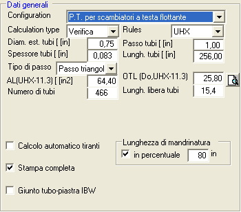

I dati che compaiono in questo pannello possono variare in funzione del tipo di fascio tubiero selezionato nella casella a discesa 'Configuration'. Di seguito verranno elencati tutti i dati che possono comparire nelle diverse situazioni.

Viene qui scelto il tipo di fascio/piastra tubiera, fra le sei opzioni proposte.
Si può scegliere tra Calcoli di progetto e calcoli di verifica. Questa scelta ha scarsa influenza sullo svolgimento dei calcoli; è normalmente adeguato mantenere in ogni caso l'impostazione Calcoli di progetto.
I dati di questa sezione sono espressi unicamente in millimetri.
Nel caso che sia stato preliminarmente inserita la membratura Tubi scambiatori, è possibile richiamare in questa finestra i dati colà inseriti premendo il pulsante.
Si tratta della lunghezza effettiva. Il programma si incarica di sottrarre lo spessore delle piastre, quando applicabile.
Si tratta del diametro equivalente per il calcolo dello spessore della piastra tubiera al taglio. Ove non altrimenti noto, può essere calcolato dal programma Traccia, richiamabile da questa finestra con il pulsante.
Questa scelta è applicabile al caso dei fasci a teste fisse, e riguarda il caso previsto da RCB-7.166 FIXED TUBESHEETS OF DIFFERING THICKNESSES.
Questa è l'opzione preimpostata
Vi è simmetria rispetto al piano mediano perpendicolare all'asse dell'apparecchio. Quindi le piastre tubiere differiscono solo per lo spessore, le caratteristiche fisiche, e i dati di temperaura. Questo è il caso previsto dalla Nota a RCB-7.166.
Le piastre possono anche differire per configurazione (flangiature o collegamenti integrali) e per la presenza dell'estensione per bullonatura. In questo caso lo step (4) di RCB-7.166 è stato emendato (vedi Appendice).
Questo valore è richiesto nel caso di piastre tubiere per tubi ad U con estensione flangiata, calcolate secondo RCB-7.1342
Il programma AsmeVip è in grado di effettuare il progetto, oltre che la verifica, delle piastre tubiere con estensione flangiata. Tuttavia bisogna notare che esistono infinite soluzioni minimali ammissibili al problema di progetto, ciascuna caratterizzata da un diverso rapporto tra lo spessore assunto per l'estensione e lo spessore al centro piastra. Se si imposta il valore di tale rapporto pari a zero, il programma ricercherà la soluzione ottimale dal punto di vista della minimizzazione dello spessore nella zona centrale. Se invece si imposta il rapporto ad un valore compreso tra 0.5 e 1, allora il programma presenterà gli spessori minimi che rispettano il rapporto impostato.
Questo parametro è richiesto nel caso di fasci tubieri a teste fisse.
Ove sia stato preliminarmente introdotto un dilatatore nel Lato Mantello, la casella a discesa presenterà tre possibilità:
Il calcolo del fascio tubiero sarà eseguito in funzione del valore di rigidezza fornito manualmente. Tale valore sarà fornito successivamente nelle maschere attivate dalla richiesta di esecuzione della procedura di calcolo (vedi pulsante Calcola). In questo caso sarà necessario fornire anche il diametro massimo interno presunto del dilatatore (vedi oltre).
Se si seleziona questa impostazione il calcolo fascio tubiero/dilatatore verrà eseguito in modo completamente integrato. Non sarà quindi necessario eseguire un calcolo separato del dilatatore. E' prevista inoltre una procedura automatizzata di ricerca delle geometrie ammissibili per il dilatatore.
Nel caso di fasci tubieri a teste fisse, con dilatatore definito da uno spring-rate fornito manualmente, è necessario specificare anche il diametro interno massimo dello stesso.
Nel caso di dilatatori definiti esplicitamente, questo dato è incluso fra i dati geometrici del dilatatore.
Si tratta di un requisito addizionale alle norme TEMA, consistente nel tenere conto dello stato di tensione (componente radiale) generato dal momento flettente, considerando l'estensione flangiata come una mensola, oltre che dello stato di tensione (componente circonferenziale) generato dal momento torcente, considerando l'estensione flangiata come una trave anulare (vedi Appendice).
Normalmente questa opzione non deve essere selezionata.
Il tiro dei bulloni nell'estensione flangiata è normalmente desunto dal calcolo, preliminarmente effettuato, del flangione accoppiato. In questo caso bisogna deselezionare la presente opzione, ed i dati del calcolo risulteranno preimpostati nel pannello dei dati sulla giunzione.
Questa opzione riguarda la messaggistica rivolta al progettista durante la fase di calcolazione.
Selezionare questa opzione se si desidera un rapporto che documenti passo-passo i calcoli effettuati.